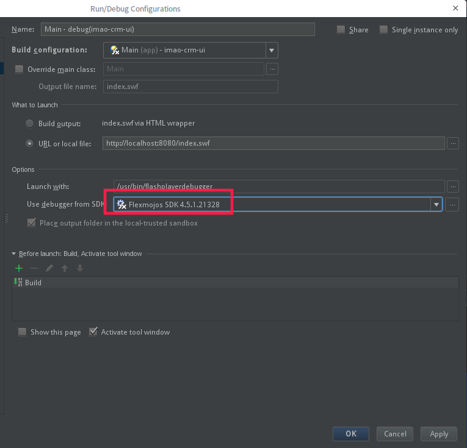

软件安装
阿里云镜像
1 | #备份 |
命令行工具
1 | #Tilix终端 |
开发工具
1 | #idea |
其他软件
1 | #locate |
配置文件备份
可通过硬链接的方式，将以下配置文件映射到git仓库进行版本管理
比如：ln /xxx/vscode_settings.json ~/.config/Code/User/settings.json
1 | #vscode |
管理员运行
- For a console program use:
sudo <program name> If it is a GUI application use:
gksudo <program name>可修改
/usr/share/applications和/usr/local/share/applications的快捷方式
启动脚本
系统级
- /etc/environment
- /etc/xprofile bash script executed while starting X Window System session.
- /etc/profile and /etc/profile.d/*
/etc/<bash>.<bash>rc作用单独bash script. This is a poor choice because it is single bash specific.
用户级
~/.pam_environment ~/.xprofile ~/.profile ~/.<bash>rc
GRUB
修改配置
1 | #/etc/default/grub 优先 /usr/share/grub/default/grub |
启动 菜单无法显示问题
SSH免密 - sshpass
1 | export SSHPASS=$DEPLOY_PASS |
SSH保持连接配置
客户端
1 | #/etc/ssh/ssh_config |
服务端
1 | #/etc/ssh/sshd_config |
问题列表
Deepin没有声音
原因是deepin不会自动选择输入输出设备，解决方法如下：
- 点击任务栏上的“控制中心”
- 在“按制中心”中单击“声音”
- 点击“声音”后在弹出的界面中单击“高级设置”
- 在“高级设置”中单击将输出设备修改为“模拟耳机”
- 除此之外，如果安装了pavucontrl，这是pulse audio服务的一个控制程序， 也可以进行类似的设置。
FlashPlayer Linux 编译问题
错误信息
1
2Error:[NSFlexLib]: Picked up _JAVA_OPTIONS: -Dawt.useSystemAAFontSettings=gasp
Error:[NSFlexLib]: Compiler process is not started.原因、解决办法：deepin的jdk默认加入了
-Dawt.useSystemAAFontSettings=gasp（/etc/profile.d/java-awt-font-gasp.sh），需去除1
sudo gzip /etc/profile.d/java-awt-font-gasp.sh
FlashPlayer Linux Debug问题
错误信息
1
2
3
4
5
6
7
8
9
10
11
12
13
14
15
16
17
18
19
20
21
22java.lang.NullPointerException
at flash.tools.debugger.concrete.PlayerSession.pullUpActivationObjectVariables(PlayerSession.java:1007)
at flash.tools.debugger.concrete.PlayerSession.requestFrame(PlayerSession.java:984)
at flash.tools.debugger.concrete.DStackContext.populate(DStackContext.java:156)
at flash.tools.debugger.concrete.DStackContext.getArguments(DStackContext.java:74)
at flex.tools.debugger.cli.DebugCLI.appendFrameInfo(DebugCLI.java:1202)
at flex.tools.debugger.cli.DebugCLI.doInfoStack(DebugCLI.java:1167)
at flex.tools.debugger.cli.DebugCLI.processLine(DebugCLI.java:6471)
at flex.tools.debugger.cli.DebugCLI.process(DebugCLI.java:727)
at flex.tools.debugger.cli.DebugCLI.execute(DebugCLI.java:569)
at flex.tools.debugger.cli.DebugCLI.main(DebugCLI.java:374)
java.lang.NullPointerException
at flash.tools.debugger.concrete.PlayerSession.pullUpActivationObjectVariables(PlayerSession.java:1007)
at flash.tools.debugger.concrete.PlayerSession.requestFrame(PlayerSession.java:984)
at flash.tools.debugger.concrete.DStackContext.populate(DStackContext.java:156)
at flash.tools.debugger.concrete.DStackContext.getArguments(DStackContext.java:74)
at flex.tools.debugger.cli.DebugCLI.appendFrameInfo(DebugCLI.java:1202)
at flex.tools.debugger.cli.DebugCLI.doInfoStack(DebugCLI.java:1167)
at flex.tools.debugger.cli.DebugCLI.processLine(DebugCLI.java:6471)
at flex.tools.debugger.cli.DebugCLI.process(DebugCLI.java:727)
at flex.tools.debugger.cli.DebugCLI.execute(DebugCLI.java:569)
at flex.tools.debugger.cli.DebugCLI.main(DebugCLI.java:374)原因分析：出错时选中的debug sdk是工程sdk，是3.6，可能老的sdk和新的linux flashplayer不兼容
- 解决办法：在idea选中新版本的sdk做debug，这个sdk可以跟编译版本的sdk不同
在Run/Debug Configuration页面，配置“Use debugger from SDK”为4.x
 - 讨论网址
The Flex SDK Debugger Adapter of the Flex SDK 3.6 has some bugs especially with 64-bit platforms
(also Ubuntu 64-bit, times back when Adobe was also supporting Linux)
This was the reason for us to allow the user to choose the Flex SDK to debug with.